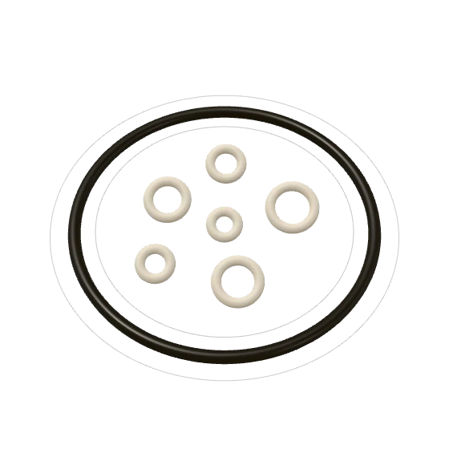
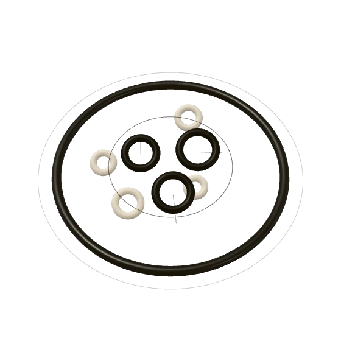
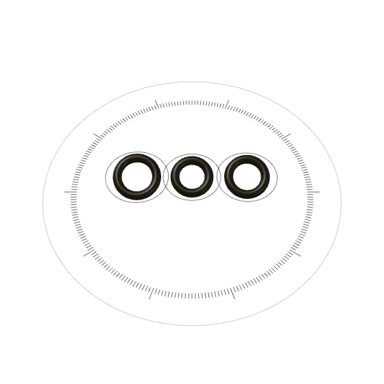
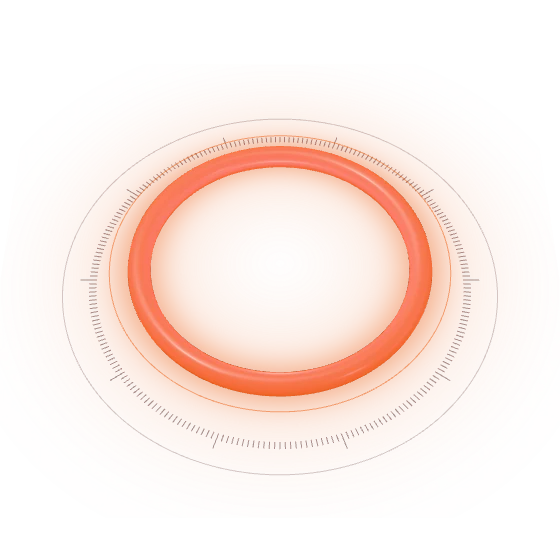
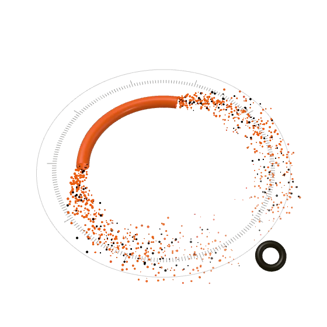

Proof of Funds on Helius Privacy Rings
Post proof, not wallet.
A public certificate that you hold at least a tier of SOL or USDC. It never shows the amount, it can hide the wallet, and it revokes itself the moment the money moves.
Solana mainnet slot, read live
The wall fills from the chain the moment the first certificate lands.
How it works
Five moments, one signature you can read.
Your money stays in a Privacy Ring. What leaves it is a statement: these notes exist, they are unspent, and together they reach the tier.
-

01
Shield
Move SOL or USDC into your own POF vault, a separate Privacy Ring made from one wallet signature. The money stays yours and stays shielded.
-

02
Disclose
Pick a tier, from at least 1 SOL to at least 10,000. Your browser picks the fewest notes that reach it and opens only those to the Verifier.
-

03
Attest
The Verifier checks the notes exist and are unspent, keeps nothing, and signs 240 bytes. Every signature goes into a public log.
-

04
Certify
The program rebuilds the 240 bytes on chain, checks the signature and writes the certificate: a tier, never an amount.
-

05
Revoke
The keeper watches the notes behind every certificate. Spend one and the certificate is revoked on chain, with the slot, for everyone at once.
The wall
Every certificate, live.
Read from the chain. When a disclosed note is spent, the keeper proves it on chain and the certificate turns over. Nobody can edit a certificate, including us.
No certificates yet.
The first certificate appears here the moment it lands on chain, and turns over the moment its funds move.
What a certificate says
A minimum. Never an amount.
It proves
- The disclosed notes exist in the Rings tree and were unspent at the slot it names.
- Together they reach the tier: at least 1,000 SOL means at least 1,000 SOL.
- The subject signed for this vault, so the tier is bound to it.
- It is still true now: a spend revokes it on chain.
It does not prove
- How much you hold in total, or anything about the rest of your Ring.
- That the money was never borrowed. Revocation catches the return, not the loan.
- Anything about the past. It starts at the slot it was certified.
- Anonymity. A wallet subject names the wallet; choose a badge to name nobody.
Use it
Gate anything with a certificate.
Rooms on chain, a Telegram gate, Discord roles, an API, an SDK, an MCP server for agents, and one CPI call for your own program.
import { PofClient } from "@pof/sdk";
const pof = new PofClient({ rpc: "https://api.mainnet-beta.solana.com" });
const r = await pof.checkProofOfFunds({ subject: "@anon", asset: "SOL", minTier: 4 });
// r.ok: a live certificate of at least 1,000 SOL, read from chainlet view = pof::cpi::require_certificate(ctx, subject_hash, 0, 3)?.get();
require_keys_eq!(view.controller, user.key());
// passes only while the certificate is live and at least 100 SOLGo further
- /verifyVerifyCheck any wallet, X handle or badge against the chain: the tier, the status, the slot.
- /docsDocsThe paper: the protocol, the trust points, the threat model, revocation and fees.
- /developersDevelopersThe read API, the SDK, the require_certificate CPI, pof_gate Rooms, the MCP server and the bots.
- /logLogEvery attestation the Verifier signs, in an append-only Merkle log anchored on chain. Check any entry in your browser.
- /statusStatusThe live health of every part POF depends on: the RPC, the program, the Rings tree, the indexer, the Verifier, the relayer, the keeper and the log.